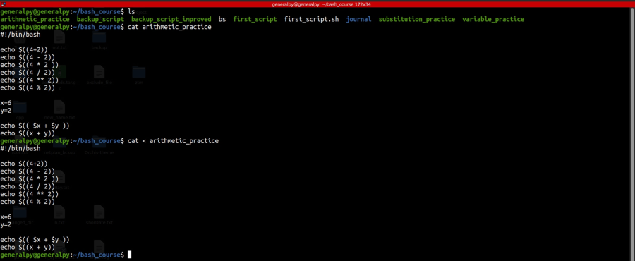
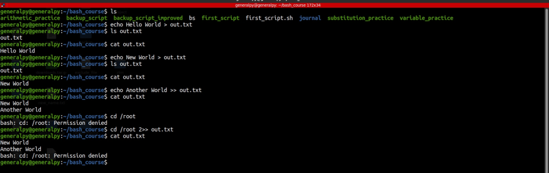

After the command is executed redirection happens.
Shell provides 3 different data stream namely STDIN(0), STDOUT(1), STDINERR(2) apart from simple terminal interface to redirect data to.
To redirect input from command line arguments to stdin, use < symbol after the command.

To redirect output and error to STDOUT and STDERR use > or >>.
> creates a new file if doesn't exists and overwrites if exists and >> appends if file exists else creates new file.
Syntax is :
command num> or num>> destination_file_nameHere num can be 1 for STDOUT or 2 for STDERR or & for both. If no number then STDOUT by default.
